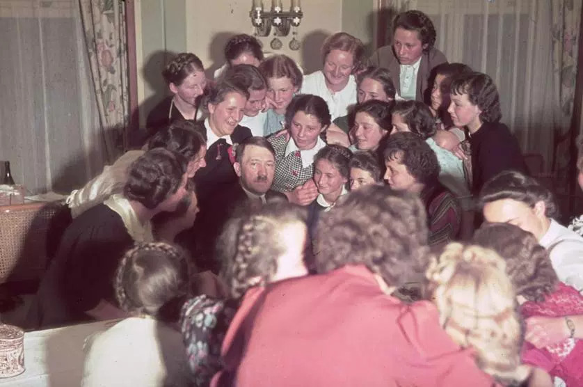
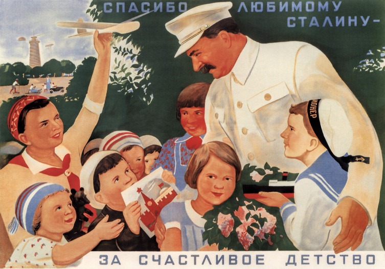
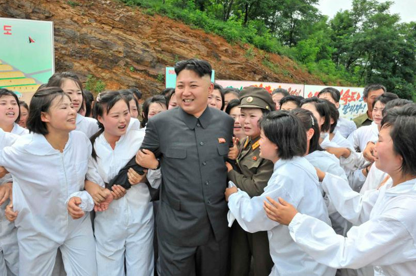
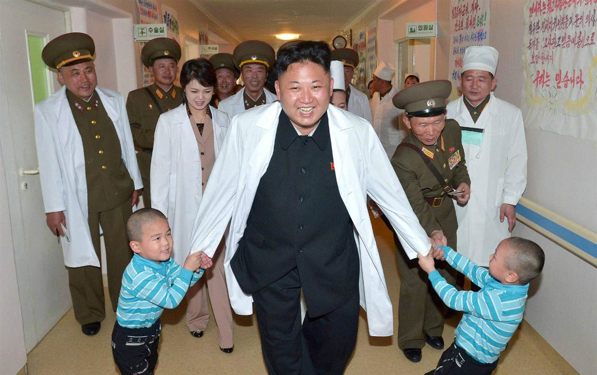

Pas 2. El totalitarisme. Només una història passada? (I)
El totalitarisme és un fenomen històric definitivament superat?
Quan ens enfrontem a la barbàrie, sempre sembla que sigui cosa dels altres i no pas nostra, no pas de nosaltres. Cosa d’estrangers o cosa d'altres temps. El totalitarisme pot semblar un fenomen històric definitivament superat, un assumpte dels llibres d'història però no pas un problema d’avui.
Mira’t aquestes imatges del passat i del present. Hi veus correspondències?

1939. Hitler envoltat de noies. Font: Hugo Jaeger - Time&Life Pictures/Getty Images

1936. Cartell de propaganda estalinista "Moltes gràcies, estimat Stalin. Per una infància feliç".

2013. El líder Nord-coreà Kim Jong Un visita una explotació agrícola. Font: KCNA via Time.

2014. Kim Jong Un, acompanyat per la seva dona, visita un hospital infantil a Pyongyang. Font: KCNA via AFP
En el totalitarisme totes les activitats, totes les dimensions de la vida, siguin d'ordre social, polític, econòmic, intel·lectual, cultural i moral es troben subordinades als interessos i a la ideologia del líder, un ésser únic i messiànic.